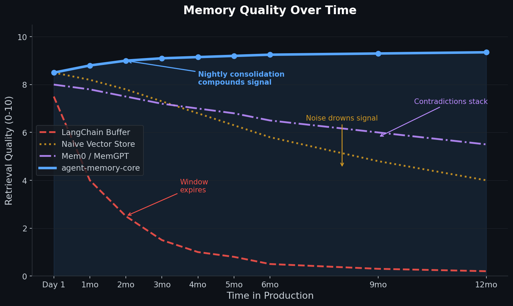
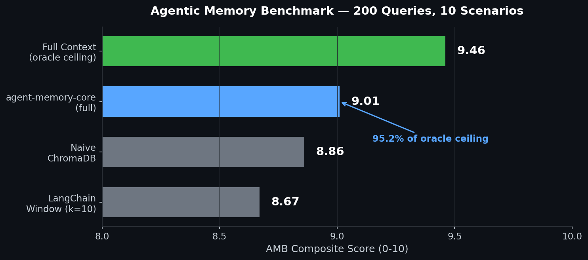
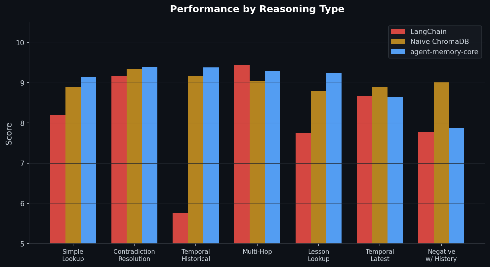

Nightly consolidation. Active forgetting. 9.01/10 on our benchmark.
Your agent at month six outperforms month one — not the other way around.

The naive approach is to store everything and retrieve by cosine similarity. That works on day one. By month three, you're drowning in stale context, contradictory facts, and duplicated noise.
Sleep doesn't replay every memory — it consolidates the important ones, decays the rest, and resolves conflicts. agent-memory-core does the same thing, nightly, automatically.
The AMB is designed to expose exactly where naive systems fail — temporal reasoning, credential recall after a rotation, multi-hop chains, lessons from past mistakes. Not hello-world retrieval.

| System | Composite | Recall@5 | Precision@5 | Answer Acc. | Temporal | Contradiction |
|---|---|---|---|---|---|---|
| agent-memory-core | 9.01 / 10 | 95% | 95% | 69% | 100% | 94% |
| Naive ChromaDB | 8.86 / 10 | 95% | 95% | 63% | 100% | 94% |
| LangChain Window (k=10) | 8.67 / 10 | 90% | 90% | 65% | 100% | 92% |
| Oracle (full context) | 9.46 / 10 | 97% | 97% | 84% | 100% | 96% |
Benchmark methodology: benchmark/README.md. Built in one week, eval-driven from day one. Every improvement was measured before and after against the same 200-query set.
The real test is the hard cases — temporal reasoning, multi-hop chains, lessons from past mistakes. That's where naive systems silently return the wrong version of a changed fact.

Each capability is individually useful. Together they produce retrieval quality that compounds.
Core install has two dependencies: chromadb and sentence-transformers. No external API required.
$ pip install agent-memory-core
pip install "agent-memory-core[reranker]"
+ cross-encoder
pip install "agent-memory-core[graph]"
+ entity graph
pip install "agent-memory-core[reranker,graph]"
everything
from agent_memory_core import MemoryStore store = MemoryStore() # Add memories with type tags store.add( "The API key is in the keychain", type="credential" ) store.add( "Project uses Python 3.12", type="technical" ) # Retrieve — intent-adaptive, salience-weighted results = store.search("Where is the API key?") print(results[0].text) # "The API key is in the keychain"
from agent_memory_core import WorkingMemory, MemoryStore store = MemoryStore() wm = WorkingMemory(max_slots=7) wm.add("User prefers terse responses") wm.add("Debugging the auth flow") # Flush to long-term at session end wm.flush(store)
# Shared — visible to all agents store.add( "Project uses Python 3.12", type="technical" ) # Agent-private memory store.add( "Internal scratchpad", type="session", agent="cipher" ) # Search: shared + agent-private results = store.search( "Python version", agent="cipher" )
from agent_memory_core import MemoryStore, Consolidator store = MemoryStore() c = Consolidator(store, min_cluster=3) # Preview without writing report = c.run(dry_run=True) print(report["clusters_viable"]) # Run for real report = c.run() print(report["archived"])
The feature that matters most isn't on any other system's roadmap: memory that actually improves over time.
| Feature | agent-memory-core | LangChain | Naive Vector | Mem0 | MemGPT |
|---|---|---|---|---|---|
| Nightly consolidation | Yes — local LLM | No | No | Partial | GPT-4 only |
| Active forgetting | Yes | No | No | No | No |
| Contradiction resolution | Yes | No | No | Partial | Partial |
| Salience scoring | Yes — type + access + graph | No | No | Partial | No |
| Entity graph | Yes | No | No | No | No |
| Agent namespacing | Yes | No | No | No | No |
| Eval harness included | Yes — AMB, 200 queries | No | No | No | No |
| Self-maintenance cron | Yes | No | No | No | No |
| Fully local | Yes — Ollama + ChromaDB | Partial | Yes | No | No |
| License | Apache 2.0 | MIT | — | MIT | Apache 2.0 |